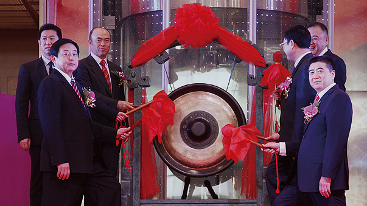
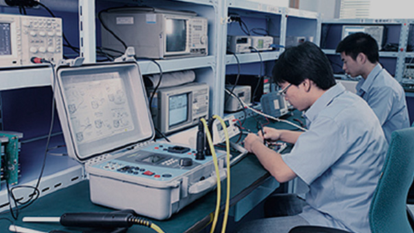
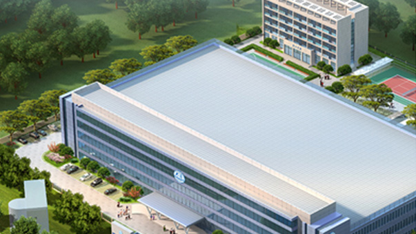

<section class="main">				
<div id="content">
	<div class="his_list">
        <dl class="ratio-img" data-ratio="0.2648">
            <dt>
                <ul>
                    <li class="on ratio-img" data-ratio="0.5622"></li>
                    <li class="ratio-img" data-ratio="0.5622"></li>
                    <li class="ratio-img" data-ratio="0.5622"></li>
                    <li class="ratio-img" data-ratio="0.5622"></li>
                    <li class="ratio-img" data-ratio="0.5622"></li>
                    <li class="ratio-img" data-ratio="0.5622"></li>
                    <li class="ratio-img" data-ratio="0.5622"></li>
                    <li class="ratio-img" data-ratio="0.5622"></li>
                    <li class="ratio-img" data-ratio="0.5622"></li>
                </ul>
            </dt>
            <dd>
                <ul>
                    <li><em></em>
                        <h3 class="fnt_24">1986年</h3>
                        <div class="his_list_p"><p>大豪的前身—北京一轻研究所“电脑刺绣机课题组”成立。</p></div>
                    </li>
                    <li><em></em>
                        <h3 class="fnt_24">1987年</h3>
                        <div class="his_list_p"><p>与青岛缝纫机厂合作开发成功中国第一台GY612型多头多色电脑刺绣机。</p></div>
                    </li>
                    <li><em></em>
                        <h3 class="fnt_24">1988年</h3>
                        <div class="his_list_p"><p>GY612型多头多色电脑刺绣机通过轻工部的鉴定，成为国家级新产品。<br>拥有自我知识产权的BECS-03型刺绣机用电控正式推向市场，结束了中国电脑刺绣机从国外进口的历史。</p></div>
                    </li>
                    <li><em></em>
                        <h3 class="fnt_24">1989年</h3>
                        <div class="his_list_p"><p>BECS-03型刺绣机用电控开始批量生产、销售。</p></div>
                    </li>
                    <li><em></em>
                        <h3 class="fnt_24">1990年</h3>
                        <div class="his_list_p"><p>GY612型多头多色电脑刺绣机荣获北京市科技进步一等奖。<br>
GY612型多头多色电脑刺绣机荣获国家科技进步二等奖。
</p></div>
                    </li>
                    <li><em></em>
                        <h3 class="fnt_24">1991年</h3>
                        <div class="his_list_p"><p>拥有自主知识产权的小型化5相步进驱动器研制成功。<br>
BQS刺绣机打版系统和BQS刺绣机用磁盘机研制成功。<br>
大豪杭州办事处正式成立。
</p></div>
                    </li>
                    <li><em></em>
                        <h3 class="fnt_24">1992年</h3>
                        <div class="his_list_p"><p>北京大豪电脑公司成立，标志着中国第一家研制、生产、销售缝制设备用电脑控制系统并拥有自有知识产权的专业化高科技公司的诞生。产品开始以“大豪”品牌投入市场
</p></div>
                    </li>
                    <li><em></em>
                        <h3 class="fnt_24">1993年</h3>
                        <div class="his_list_p"><p>大豪BECS-04刺绣机用电脑控制系统研制成功，开创国内液晶显示的先河。<br>
大豪电脑全年销售量突破1000台。
</p></div>
                    </li>
                    <li><em></em>
                        <h3 class="fnt_24">1994年</h3>
                        <div class="his_list_p"><p>国内第一台链式机用电脑控制系统研制成功，为国产特种电脑刺绣机的发展奠定了基础。<br>
国内第一台采用CRT彩色图形显示的大豪BECS-05刺绣机用电脑控制系统研制成功。
</p></div>
                    </li>
                </ul>
            </dd>
        </dl>
    </div>
	  
</div>	
</section>